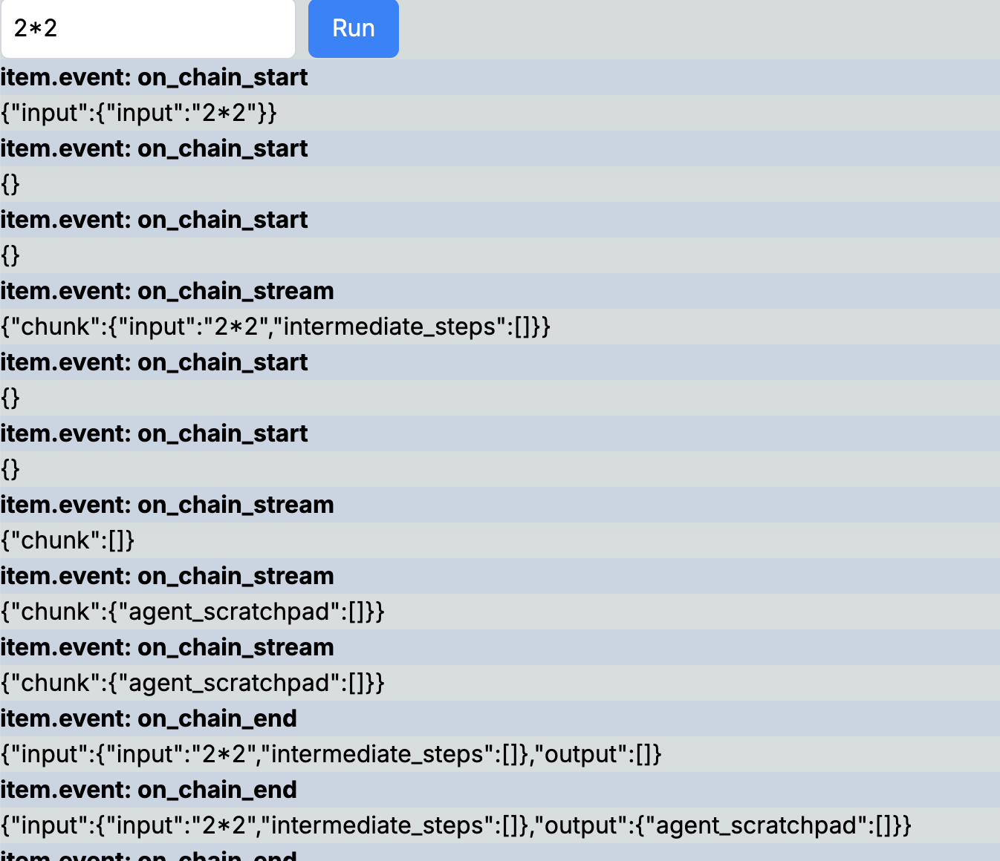

LangserveとVercel AI SDKを使ってGenAIデモアプリをクイックに作る
Vercel AI SDKとは？
Vercel AI SDKは、Vercel社が提供するAIアプリケーション開発のための強力なフレームワークです。これを使えば、AIアプリケーションの開発が驚くほど簡単になります。
Vercel AI SDKは、以下の3つの主要なコンポーネントで構成されています。
| ライブラリ | 機能 |
|---|---|
| AI SDK Core | 統一されたAPIで任意のLLMを呼び出す（例: generateText、generateObject） |
| AI SDK UI | API経由でストリーミングチャットや生成UIを構築する（例: useChat） |
| AI SDK RSC | React Server Components (RSC) からクライアントへ生成UIをストリームする（例: streamUI） |
利用シーン
私はコンサルティングファームでAIエンジニアとして働いており、クライアントの要望に応じて様々なAIアプリケーションを開発しています。特に、提案段階で短期間でデモアプリを作成することがよくあります。
簡単なアプリであれば、Vercel AI SDKのCore機能を使って、Next.js内で直接モデルを初期化し、すぐにコールすることができます。
しかし、より複雑なアプリを作成する場合、通常はWebアプリ開発とAI開発が別々の担当者によって行われます。特にAI側では、PythonのLangChainを使うケースが多いです。そんな時に役立つのが、LangserveとVercel AI SDKを組み合わせたクイックな開発手法です。
実例
LangChainで作ったAgent
例えば、以下のような掛け算ツールmultiplyを持つAgentを構築しました。
import os
from langchain_openai import ChatOpenAI
from langchain import hub
from langchain.agents import AgentExecutor, create_tool_calling_agent
from langchain.tools import tool
@tool
def multiply(a: float, b: float) -> float:
"""Multiply two numbers.
Args:
a (float): The first number
b (float): The second number
Returns:
float: The result of multiplying
"""
return a * b
def create_agent():
llm = ChatOpenAI(
model='gpt-4o-mini', temperature=0, api_key=os.getenv('OPENAI_API_KEY')
)
prompt = hub.pull('hwchase17/openai-functions-agent')
prompt.messages
prompt.messages[0].prompt.template = """
You are a helpful assistant. But you are not good at calculate math.
If you are asked to calculate math, you **must** use the tools that are available to you.
Do not try to calculate math on your own.
"""
tools = [multiply]
agent = create_tool_calling_agent(llm, tools, prompt)
agent_executor = AgentExecutor(agent=agent, tools=tools, verbose=True)
return agent_executorこのAgentは、ユーザーの質問に対してツールを利用して回答します。
> Entering new AgentExecutor chain...
Invoking: `multiply` with `{'a': 2, 'b': 10}`
20.0
The result of \( 2 \times 10 \) is 20.
> Finished chain.
{'input': '2*10', 'output': 'The result of \\( 2 \\times 10 \\) is 20.'}LangServeでAgentをWebサーバー化する
LangServeは、LangChainで作成したChainやAgentをREST APIとしてデプロイするのを支援するライブラリです。FastAPIとpydanticを使用してデータのチェックを行います。
以下のコマンドでLangServeをインストールできます。
次に、agent.pyと同じフォルダに以下のapp.pyを配置します。
from agent import create_agent
from dotenv import load_dotenv
from fastapi import FastAPI
from langserve import add_routes
from pydantic import BaseModel
load_dotenv('../.env.local')
class Input(BaseModel):
input: str
class Output(BaseModel):
output: str
app = FastAPI(
title='LangChain Server',
version='1.0',
)
agent = create_agent()
add_routes(
app,
agent.with_types(input_type=Input, output_type=Output),
)
if __name__ == '__main__':
import uvicorn
uvicorn.run(app, host='localhost', port=8000)これで、コマンドラインでpython app.pyを実行すれば、APIサーバーがhttp://localhost:8000に立ち上がります。
APIをコールしてみましょう。
curl --location --request POST 'http://localhost:8000/invoke' \
--header 'Content-Type: application/json' \
--data-raw '{
"input": {
"input": "2*2"
}
}'結果は以下の通りです。
{
'output': {'output': 'The result of \\( 2 \\times 2 \\) is 4.'},
'metadata': {
'run_id': '770fc929-6cbe-4779-b3a1-8aa4e5f5ca64',
'feedback_tokens': [],
},
}他の利用方法については、http://localhost:8000/docs/で確認できます。

Vercel AI SDKでWebアプリを作成
次に、Webアプリを作成します。
まず、Next.jsのアプリを初期化します。選択肢はすべてデフォルトで進めます。
次に、必要なライブラリをインストールします。
次に、Next.jsのRSCを使ってアプリを構築します。
/app/actions.tsxを新しく作成し、以下の内容を追加します。runAgent関数にインプットが渡されると、以下の処理が行われます。
- AI SDKでストリーミングデータ通信を行う
streamを初期化。 - Langchain.JSを使って、
http://localhost:8000/のAPIとやり取りするRemoteRunnableを初期化。 processStreamingEvents()でインプットをAPIに入力し、結果を受け取り、streamの値を更新。streamの値をクライアント側に返す。
"use server";
import { createStreamableValue } from "ai/rsc";
import { RemoteRunnable } from "@langchain/core/runnables/remote";
export async function runAgent(input: string) {
console.log("input", input);
const stream = createStreamableValue();
const chain = new RemoteRunnable({
url: `http://localhost:8000/`,
});
async function processStreamingEvents() {
const streamingEvents = chain.streamEvents(
{ input },
{ version: "v2" }
);
for await (const item of streamingEvents) {
const formattedItem = JSON.parse(JSON.stringify(item, null, 2));
stream.update(formattedItem);
}
stream.done();
}
// Start processing the streaming events
processStreamingEvents();
return { streamData: stream.value };
}次に、画面に表示するために、app/page.tsxのコードを以下のように変更します。
ここでは、./actionsから定義したrunAgentをインポートし、ユーザーからのインプットを渡して、Agentの各操作の詳細をストリーミングイベントで取得し、それを逐次表示します。
"use client";
import React, { useState } from "react";
import { readStreamableValue } from "ai/rsc";
import { runAgent } from "./actions";
import { StreamEvent } from "@langchain/core/tracers/log_stream";
export default function Page() {
const [input, setInput] = useState("");
const [data, setData] = useState<StreamEvent[]>([]);
async function handleSubmit(e: React.FormEvent) {
e.preventDefault();
if (!input) return;
const { streamData } = await runAgent(input);
for await (const item of readStreamableValue(streamData)) {
setData((prev) => [...prev, item]);
}
}
return (
<div>
<form onSubmit={handleSubmit}>
<input
type="text"
value={input}
onChange={(e) => setInput(e.target.value)}
className="border border-gray-300 rounded-md p-2 mr-2"
/>
<button
type="submit"
className="bg-blue-500 text-white px-4 py-2 rounded-md"
>
Run
</button>
</form>
<div className="h-200px overflow-y-scroll">
{data.map((item, i) => (
<>
<div key={i} className="bg-slate-300">
{item.event}
</div>
<div key={i} className="">
{JSON.stringify(item.data)}
</div>
</>
))}
</div>
</div>
);
}実際にインプットしてみると、以下のような結果が得られます。

これで、簡単にLangChainとVercel AI SDKを使ったデモアプリが完成しました。今はシンプルなフォーマットで表示していますが、すべてのデータを取得できているので、これを基にさらに多彩な表示や機能を追加することが可能です。
例えば、ツールのインプット・アウトプットやAgentのメッセージをストリーミング形式で表示することもできます。
app/page.tsxのソースコードは長いので、Githubで確認してください。
このブログポストでは、LangserveとVercel AI SDKを使って、短期間で強力なGenAIデモアプリを作成する方法を紹介しました。これを活用すれば、クライアントへの提案やプロトタイプ作成が一層スムーズに進むことでしょう。ぜひ試してみてください！